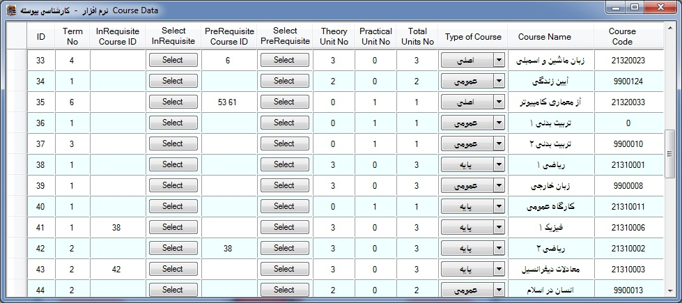
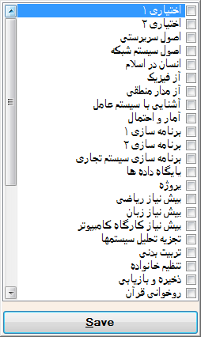

The Course
class has an ID, Term Number, In Requisite Course ID,
Pre Requisite Course ID, Theory Unit No, Practical Unit No, Type of Course,
Name, and Course Code.
Before you enter the course information page you are looking to branch select. for this
work click on "Courses" button in front of any branch to see that branch
Courses data.
After click on button "Courses" you must look this
form:

* Total Units No of a course equal to as
theoretical + practical units
are.
* Term No for a Course means that the Course in each
semester of the current branch is
presented.
In Course Data form for fill the In Requisite Course ID or
Pre Requisite Course ID, click on "Select" button from Select In Requisite or
Pre Requisite columns to open the other courses form who saved in
database.

You can select several course by checked on side
of course name in form and click on "Save" button to save any
changes.